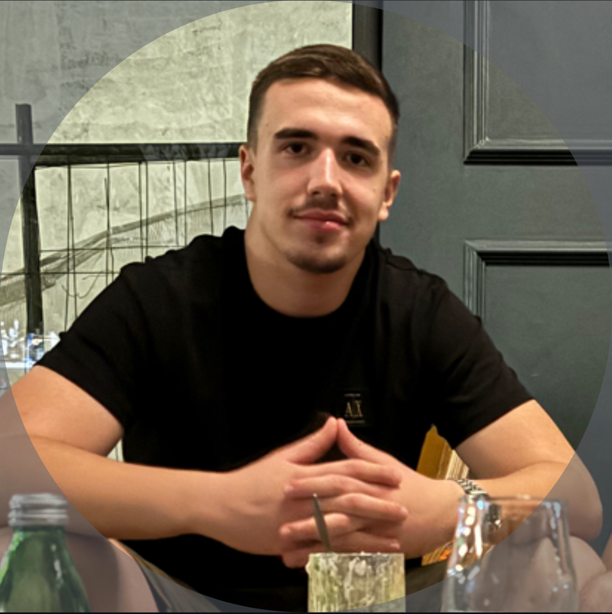

<!DOCTYPE html>
<html lang="en">
  <head>
    <meta charset="UTF-8" />
    <meta http-equiv="X-UA-Compatible" content="IE=edge" />
    <meta name="viewport" content="width=device-width, initial-scale=1.0" />
    <title>Matija Bošković</title>
  </head>
</html>
</head>

<body>
<header>
<div class="menu-bar">
    <ul>
        <li class="active"><a href="index.html">Portfolio </a></li>
        <li><a href="form.html">Form</a></li>
    </ul>
</div>
</header>
</body>

<h1>Portfolio</h1> 
<pre>

</pre>
<h2>O meni</h2>
<p>Ja sam Matija Bošković, imam 18 godina i učenik sam 4. razreda Gimnazije "Slobodan Škerović" u Podgorici.<br>
U njoj sam se zapravo i zainteresovao za programiranje. U slobodno vrijeme sam košarkaški sudija. To je moj<br>
hobi već 3 godine.</p> 

<hr>
<h2>Moji hobiji</h2>
<p>Prvi i glavni hobi mi je, kao što sam naveo, suđenje. Oduvijek sam imao strast prema donošenju odluka. Još<br> 
kao mali volio sam da dijelim pravdu kraj malih ekrana. Nakon toga tu je i ribolov kao hobi za uživanje i<br>
relaksaciju. Tu je svakako i košarka kao moja prva ljubav. Zapravo nakon 6 godina treniranja košarke prešao<br>
sam na sudijski posao.</p>
<hr>
<h2>Obrazovanje</h2>
<p>Završio sam OŠ "Radojica Perović" kao odličan đak. Isto se prenijelo i u već spomenutu Gimnaziju. Nakon toga<br>
planiram upisivanje Elektrotehničkog fakulteta na Univerzitetu CG ili pak FIST-a na UDG-u. Prvenstveno zbog<br> 
toga prijavio sam se za ovu obuku koja mislim da će mi pružiti dobru podlogu za dalji rad i naoredak na polju<br>
programiranja.</p>
<pre>


</pre>

<p> 
  Od kada sam počeo izučavati programiranje, bavio sam se sledećim programskim (opisnim) jezicima:
   <ul>
      <li>HTML-om</li>
      <li>CSS-om</li>
      <li>JavaScript-om</li>
   </ul> 
</p>